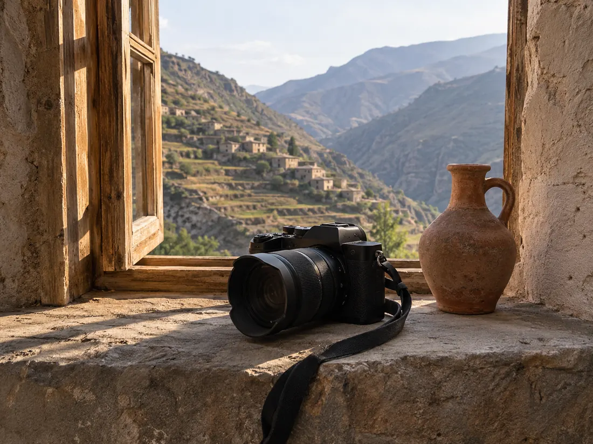

И как выйти на первые заказы от 50 000 ₽ в месяц. Вопросы про свет, кадр, технику, монтаж и заказы.
Подарок после тестаПлан на 14 дней под твою слабую зону. Пришлю в Telegram сразу после результата.
Смотрю на свет, кадр, технику, монтаж и заказы
из балла
Две зоны, с которых стоит начать.
С чего начать в первые три дня:
Полный план на 14 дней по шагам пришлю в Telegram.